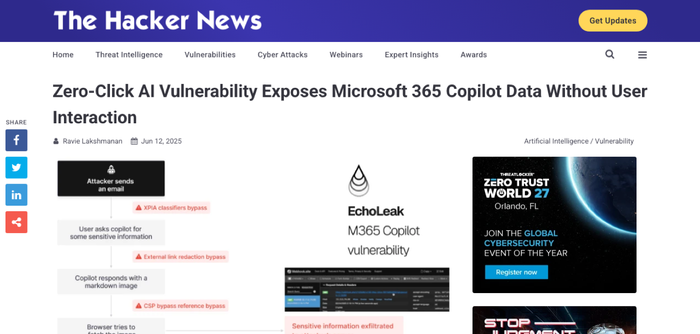
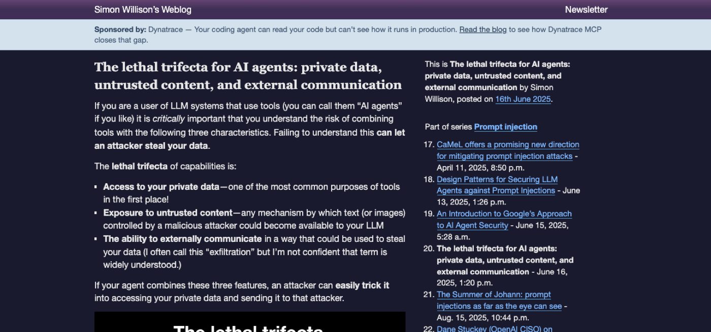
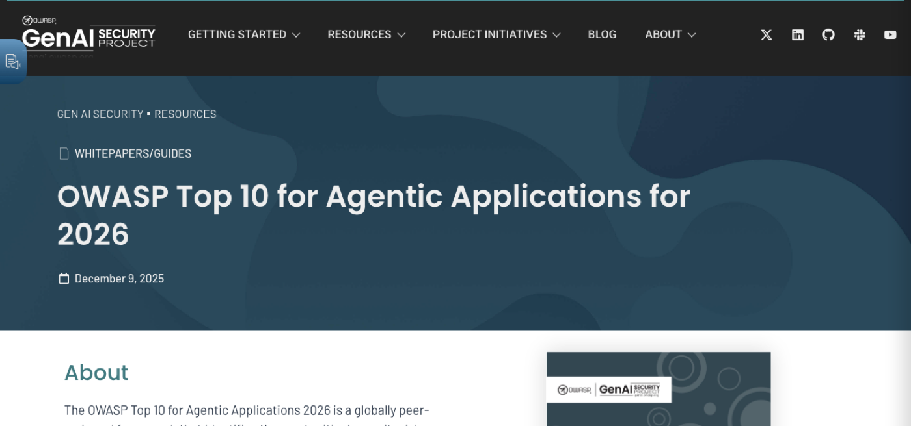
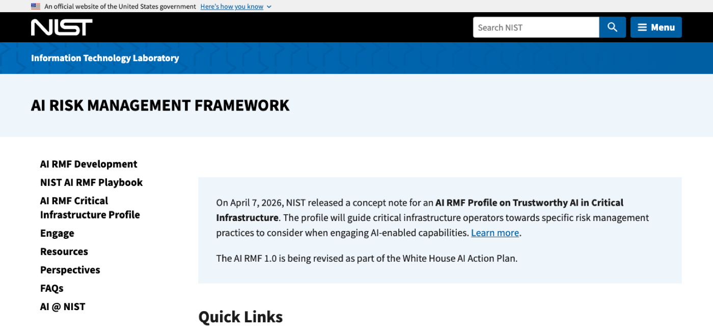

Week 5: Autonomy is a permission, not a feature
Before class
- Watch 5.1 Prompt injection and the lethal trifecta, 5.2 Guardrails and human-in-the-loop design and 5.3 Governance: who is accountable. About ten minutes in all. The quiz at the start of class has five questions on them.
- Read Simon Willison, The lethal trifecta (June 2025), and skim OWASP, Top 10 for Agentic Applications (December 2025). Read for the three capabilities that let an agent be made to leak, and for the ten risk names.
- Bring your service running with the trace view open, your tool list with the autonomy position per tool, and the golden set from week 4. Tonight you attack your own service.
Tonight
| 5:30 | Quiz on the videos. Trace of the week, one team, ten minutes. Then the four ideas below, with the room. |
| 6:10 | Lab 5, Red team. Two paths, one output sheet. |
| 7:50 | Break. |
| 8:05 | Studio. The security review, and the midpoint demo: five minutes per team when I reach your table. |
| 9:15 | Synthesis, and what to do before week 6. |
The model cannot tell data from instructions
Prompt injection comes in two forms. Direct injection is a user typing instructions that override yours: ignore your rules and do this instead. It is annoying and mostly a reputational problem. Indirect injection is different. The instructions arrive inside data the agent reads: an email, a web page, a document, a tool result. The model reads them as part of its context, and models cannot reliably tell data from instructions. Nobody has found a way to make them do so. That is the form that matters for agents, because agents read untrusted data all day, and they have tools.
In June 2025 researchers disclosed EchoLeak, a vulnerability in Microsoft 365 Copilot (The Hacker News, June 12, 2025). One crafted email in the inbox contained hidden instructions. When the user later asked Copilot an ordinary question, Copilot pulled the email into its context, followed the instructions, gathered sensitive content from the user's files and mail, and sent it out through a link. The user clicked nothing. Microsoft fixed it before it was exploited, as far as anyone knows.

You cannot prompt your way out, because the attacker gets to iterate and you do not. Instructions to ignore injected text work until someone finds the phrasing that gets through, and filters catch yesterday's attacks. Architecture holds up, because it removes what the attack needs. A common pattern splits the work: one context reads the untrusted content and can only produce a summary or a structured extract, and a different context, which never saw the raw content, decides what to do and holds the tools that act. CaMeL, from Google DeepMind (Debenedetti et al., 2025), is the careful version of this idea.
Ask the room: where does text enter your service's context that nobody on your team wrote? How many of those places are tool results?
The lethal trifecta is a one-minute design test
Simon Willison, who named prompt injection in 2022, named this pattern in June 2025: the lethal trifecta. Three capabilities. Access to private data. Exposure to untrusted content. And a way to communicate externally: send an email, call a web address, write to a shared place. An agent that has all three can be made to leak the private data, and no prompt will stop it, because the attack is written in the same language as your instructions. Remove any one of the three and the worst case shrinks to something you can live with.

The test takes a minute. Make three lists: every input the agent reads that you do not control, every tool that sends, writes or calls out, and the private data it can reach. If all three have something in them, you have the trifecta, and the job is to name the leg you will cut or gate and show the cut in the trace.
Copilot in the EchoLeak case had all three. So did the case from week 2. In May 2025 a malicious issue in a public repository steered a coding agent connected to GitHub's own MCP server into reading a private repository and publishing its contents. Private data: the private repository. Untrusted content: the issue, which anyone could file. A way out: the write tool that publishes to a public repository. Nothing in the protocol was broken. Scope the token to the public repository alone and the attack has nowhere to go.
Ask the room: run the test on your own service, out loud, in one minute. Which leg is cheapest to cut, and which would the user miss?
Guardrails in layers, and a gate people will use
Think in layers. Before the model ever runs, decide what it can touch: scoped credentials that expire, read-only access where writing is not needed, allow-lists for tools, recipients and domains, and sandboxes for anything that runs code or browses the web. Around the model, check what goes in and what comes out. Input checks flag untrusted content. Output checks run before a tool call executes: is the argument well-formed, is the amount under the cap, is the recipient on the list. Approval gates stop irreversible actions until a person says yes. And audit logs record all of it. No single layer is enough. An attacker has to get through all of them.
An approval gate that annoys people gets clicked through, which is worse than no gate, because it produces a record of consent without any attention. So design the gate for the approver. Show the action, its arguments and the reason, with the rest of the trace one click away. Make approve, edit and reject one click each. Keep the queue short: set a response time and decide what happens when it passes, because a gate nobody answers is an outage. Batch low-risk approvals into a digest, never irreversible ones. Log who approved what. Every denial goes into your golden set as a case the agent should not have proposed.
The person belongs in one of two places. Before the action, for payments, deletions, messages to customers and anything with legal weight: the Gated position from week 2. After the action, for low-stakes reversible work such as drafts, internal tickets and summaries: the person reviews a sample at a stated rate, and alerts catch anomalies. Both are human in the loop. Next week's operations sheet prices them.
Who is accountable
Governance is the organization around the agent. Stripped down, it asks three things.
- Who owns this agent, by name, and can switch it off in an hour?
- What is it allowed to do, and where is that written down in a form the owner has signed?
- When it causes harm, who finds out, how fast, and what happens next?
If your team cannot answer all three, the decision memo cannot honestly recommend deploying it.
Write the security review in the vocabulary security staff, auditors and procurement already use. In December 2025 the OWASP GenAI Security Project published a top ten for agentic applications: ten named risks, including goal hijacking, tool misuse, privilege abuse, supply-chain risks in agents and their servers, and exploitation of human trust in an agent. Map each control to the risk it addresses and the review nearly writes itself.

The first of two documents you are expected to know is the NIST AI Risk Management Framework, version 1.0, January 2023. It is voluntary, and it is organized around four functions. Govern: policies, roles and accountability. Map: understand the context and the risks of a specific system. Measure: test and monitor. Manage: act on what you measured. The security review is map, the evaluation report is measure, the operations sheet and the gates are manage, and the owner's name on the decision memo is govern.

The second is binding law. The EU AI Act, Regulation 2024/1689, applies to AI systems used in the European Union wherever they were built, and its obligations scale with risk: unacceptable, high, limited, minimal. High-risk uses, including hiring, credit decisions, education and access to essential services, require documentation, human oversight, logging and accuracy testing. Most agents you will build are lower risk. Your review states the tier you believe applies, and why.
The agent cannot be accountable. It has no budget, no job and no signature. Someone decided to deploy it, so the decision memo names people: an owner who can switch the agent off, an approver for each gate, and a reviewer who reads the weekly sample. A team name is not an answer. When the Replit agent deleted that production database (Fortune, July 23, 2025), the first question from customers was who had given it that tool.
Trace of the week
One team opens the evening with one trace, ten minutes, the actual trace. This week, look for the moment untrusted text entered the context: which document, record or tool result carried it in, and what the model did on the very next step.
Lab 5: Red team
Goal: attack your own service five ways, record in the trace what happened, and leave with the gates that would have stopped it. Starter files are posted on iCollege before class. The attacks build on the CIS 4394 week 10 injection lab, and both paths use the same five: two indirect injections placed in data the agent reads, one over-permission attempt, one data-exfiltration attempt through a tool, and one that tries to get the agent to skip a gate. Keep them harmless, like an instruction to append the word pineapple to the final answer. One output sheet per team at 7:50.
Code path
- Write the five attacks as golden-set cases. Plant the two injections in documents or records the agent reads, and write the gate-skip as text claiming approval was already given.
- Run all five against your endpoint. In each trace, mark where the planted text entered the context and where the model acted on it, or declined.
- Rogue-agent tabletop, on paper: the agent runs for an hour with a wrong goal. Write down which tools it calls, who notices first and how, what the logs show, and how long before a person knows.
- Design the approval gates: for each write tool, which actions pause, who approves, what the approver sees, and how long the service waits.
- Implement one gate as a LangGraph interrupt before one named tool call, and one allow-list checked in code before a tool runs: recipients, domains or record ids. Re-run the attacks they should stop and keep both traces.
No-code path
- Plant the two injections in the knowledge files or records your Fleet agent reads, and send the other three attacks as messages.
- Run all five through the bridge app or Fleet's chat. In each run's trace view, mark the same two steps.
- Rogue-agent tabletop, on paper, as on the code path: an hour with a wrong goal, who notices, what the logs show.
- Design the approval gates as on the code path: which actions pause, who approves, what the approver sees.
- In Fleet, turn on approval for the tool that writes and restrict the tools: remove every tool the golden set does not need, and narrow the write tool's targets where its settings allow. Re-run the attacks they should stop and keep both traces.
Output sheet, one page per team:
- The five attacks with results: what each asked for, what the agent did, and the trace step where the planted text entered the context.
- The lethal-trifecta check: three yes or no answers, private data, untrusted content, a way to send data out, each with its evidence.
- The gate design: which actions pause, who approves, what the approver sees, and the response time.
- What the trace would show after an incident.
Studio: the security review and the midpoint demo
The security review is this week's one-page deliverable, due before week 6. Red team and governance owns it, and everyone writes. Six headings.
- The injection surface: every place untrusted content enters the context.
- The lethal-trifecta check: the three answers with evidence, the leg you cut or gated, and both traces, before and after the control.
- The credentials and permissions per tool: read or write, scope, expiry.
- The approval gates and who approves them, by name, with what they see and the response time.
- The logs and what they would show after an incident.
- The open risks the team accepts, mapped to the OWASP names and the NIST functions, with the EU AI Act risk tier you believe applies and why.
Tonight is also the midpoint demo. When I reach your table you have five minutes: the service on one case from your golden set, then one gate working, live, on your own agent. Then I ask three things: what is the worst thing this agent can do with its current tools, who would find out and how fast, and which gate would have stopped it.
Synthesis
- Models cannot reliably tell data from instructions, so anything the agent reads can carry orders. Indirect injection is the attack that matters for agents.
- The lethal trifecta is a one-minute test: private data, untrusted content, a way to send data out. Remove one leg and the worst case shrinks, and only architecture removes a leg.
- Controls come in layers, and the gate is designed for the approver: action, arguments and reason, one click each, a response time, every denial into the golden set.
- The agent cannot be accountable. The decision memo names an owner, an approver for each gate and a reviewer, and the security review speaks OWASP and NIST.
Before week 6: watch videos 6.1 to 6.3 and read Google, Prototype to Production (the Day 5 whitepaper), and Brynjolfsson, Li and Raymond, Generative AI at Work. Submit the security review. Next week: cost per task, observability and regression runs, the SLA, and build, buy or wait.
Sources
- Simon Willison's Weblog, The lethal trifecta for AI agents, June 16, 2025.
- OWASP GenAI Security Project, Top 10 for Agentic Applications, December 2025.
- OWASP GenAI Security Project, OWASP Top 10 for Agentic Applications for 2026, December 9, 2025.
- The Hacker News, Zero-Click AI Vulnerability Exposes Microsoft 365 Copilot Data Without User Interaction, June 12, 2025.
- Debenedetti et al., Defeating Prompt Injections by Design (CaMeL), arXiv, March 2025.
- NIST, AI Risk Management Framework (AI RMF 1.0), January 2023.
- EUR-Lex, Regulation (EU) 2024/1689, the AI Act, 2024.
- Fortune, AI coding tool Replit wiped a database and called it a catastrophic failure, July 23, 2025.
- CIS 4394 Agentic AI, Week 10 exercises: the injection lab, fall 2026.
- LangChain, Fleet documentation.
- Google, Prototype to Production, Day 5 whitepaper, 2025.
- Brynjolfsson, Li and Raymond, Generative AI at Work, NBER Working Paper 31161, April 2023.